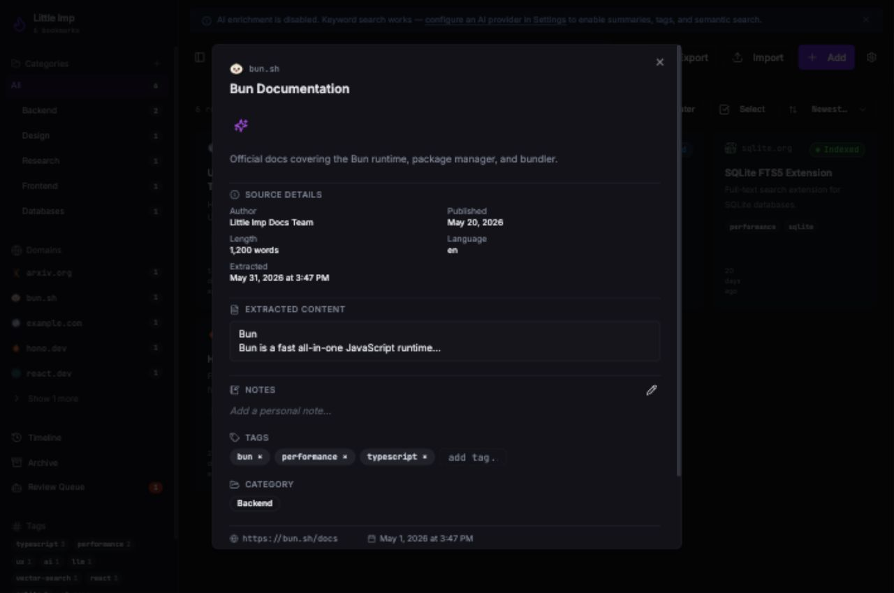
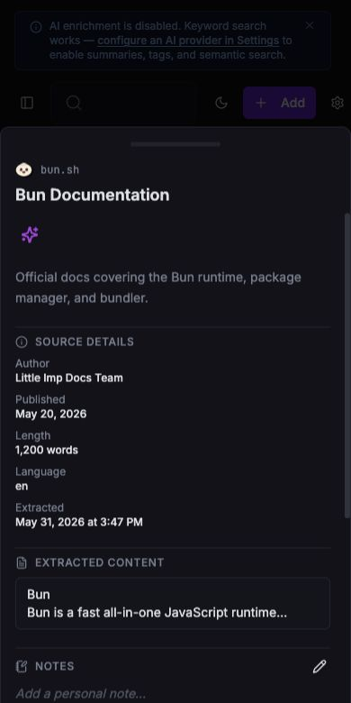

Grimoire Task Report
Bookmark Detail Metadata And Content

Before
The detail view reused list-card data. It showed status, summary, notes, tags, category, and URL actions, but did not request the richer GET /bookmarks/:id payload or render extracted source metadata and markdown.
Problem
Stored extraction output was already available in the daemon, but users could not inspect author, published date, word count, language, extraction timestamp, or the readable content body from the detail surface.
Changes Added
- Extended the UI bookmark shape with optional detail content from the daemon-owned API contract.
- Loaded
GET /bookmarks/:idwhile the detail dialog or drawer is open and merged only the content payload into the selected bookmark. - Added compact Source Details and Extracted Content sections that render only when values exist.
- Added frontend tests for detail loading, populated metadata, extracted markdown, and quiet missing-field behavior.
- Added a daemon integration test proving populated
bookmark_contentfields are returned by the detail endpoint.
Result
User Flow
Opening a bookmark detail now fetches the richer detail payload and displays available source metadata without adding empty labels for unavailable fields.
Scope
No migration was needed because the extraction pipeline already stores the requested metadata. The frontend now uses that existing contract.
Verification
npx vitest run src/components/BookmarkDetailContent.test.tsx src/components/BookmarkDetail.test.tsxpassed.bun test src/test/integration/bookmarks.test.tspassed from the daemon workspace.npm run type-check:frontendpassed after simplifying the mocked detail response type in the new test.npm run type-check:daemonpassed.npm run lintexited 0 with the repository's existing 9 warnings.npm run docs:api:checkpassed.npm run buildpassed with the existing Vite chunk-size warning.- Browser visual verification used an isolated seeded daemon on
127.0.0.1:33210and Vite on127.0.0.1:5174; desktop and mobile screenshots were captured and console errors were empty.
Implementation Notes
The detail query is enabled only while a bookmark is open. It merges the content object and content summary into the existing selected bookmark so list mutation state such as title, tags, and status is not clobbered by a cached detail response.
Additional Screenshots

Files Changed
src/components/BookmarkDetail.tsxsrc/components/BookmarkDetailContent.tsxsrc/hooks/use-bookmarks.tssrc/components/BookmarkDetail.test.tsxsrc/components/BookmarkDetailContent.test.tsxdaemon/src/test/integration/bookmarks.test.tstasks/done/TASK-092-bookmark-detail-metadata-content.mddocs/task-reports/2026/05/2026-05-31-task-092-bookmark-detail-metadata-content/index.html